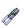
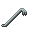

Guide to Surgery

|
This page needs revising!
The following page is out of date and/or needs to be revised. If the page's guide needs revision, see here for an example. |
The definitive guide to surgery, the primary method of patient treatment in Shiptest. All surgery requires a set of tools (be they the real deal or ghetto equivalents), a place for the patient to rest, even if it's the floor, and a procedure e.g. Brute Tend Wounds, Organ Manipulation, and so on.
Surgery On A Ship: A Beginner's Guide
Excerpts taken from an ancient TerraGov training video for doctors.
The first step of any surgery is knowing what you want, and determining if surgery is necessary. More often than not, surgery is a slow but cost-effective way of healing a patient. Make sure to check if there are alternatives to the procedure you plan to undertake, and certify that surgery will be effective first. For example, curing a minor wound is best done with sutures than full-on surgery, and there are no surgeries currently known to aid in the curing of toxic damage.
The slide flicks to a gruesome picture of a soldier lying face down in the dirt.
The second step is keeping a mental list of procedures you need to undertake. To provide an example, let us use the model of an unfortunate TerraGov marine. He has been dead a while, and chewed up by machinegun fire. Our rudimentary diagnosis tells us that his heart has likely suffered damage by now, so we will need to undertake a Coronary Bypass in order to fix him. Furthermore, very little healing equipment works on the dead, so we would do well to utilize Tend Wounds (Brute) in order to get him into a recoverable state. Mind that tending wounds is often slow even with the proper equipment, so it is best to revive them as soon as possible, then use methods of treatment best suited to the living, such as sutures. Additionally, he has broken bones we will need to perform Bone Repair on to remedy.
The third step is to locate an operating room and procure equipment. Most TerraGov ships are staffed with a medical room, including a full set of surgical tools. However, you may have lost access to your medbay somehow. In this case, your best bet is to construct a surgical table with silver, and either craft a set of operating tools or use the ones that come with a TerraGov standard medkit. If you are unable to procure even these, you can use any sort of bed or even the floor as a theater. Medical tools also have rough equivalents in a standard TerraGov toolbox, though those are obviously harder to use. The more equipment you have to substitute, the lower your chances of completing a surgery step are. You can use materials such as alcohol to sterilize your tools beforehand, increasing the chances of success. Additionally, a high number of attempts can also overcome the hindrances of improper tools.
The slide changes again, this time to a cartoon of a soldier lying on an operating table. The list of surgeries is displayed next to him.
Your fourth step should be to remove clothing where necessary. Most of the time, this means stripping them of their armor, jumpsuit, mask and helmet. Though waking up on a table naked is, I'm told, an unpleasant experience, it is a necessary evil. Tend Wounds can be performed with clothing on, but is more effective when the target is not wearing a jumpsuit or armor. Likewise, Bone Repair and Coronary Bypass require the chest and limbs be exposed. No surgeries are required for his head or face, so we can keep the mask and helmet on for now.
The slide flitters to a picture of a doctor operating.
The fifth step is to begin operating. Blinds are largely unnecessary where plastic is scarce, so start surgeries by using any medical tool on your patient. This includes a screwdriver if you are underequipped. You should keep your list of surgeries in mind here, and monitor the condition of the patient closely during this time. If additional surgeries are required afterwards, take note. Otherwise, remember that other people can assist you during an operation by setting up the IV rig, making useful medical chemicals, procuring tools as they are needed, and performing CPR on suffocating patients.
The slide changes to a picture of a grinning, splinted marine.
The sixth step is aftercare, fixing anything you didn't operate on and making sure the patient leaves stable and satisfied. Utilize your sutures, chemicals, and other accoutrements here and make sure that your patient is worthy to return to the field. Best of luck, trainee. TerraGov is counting on you.
Slowdown and Success Rates
Several factors can increase or reduce the speed at which surgery steps are performed. Reductions in step speed max out at 2 times the original speed of the step. Every additional second that the step would take instead adds 1 percentage point on to the chance of failure. You can retry a failed step, but failing certain important steps can deal severe damage to the patient.
Different operating locations provide different speed modifiers:
| Location | Modifier |
| Operating Table | 100% |
| Stasis Bed | 90% |
| 80% | |
| Any bed | 70% |
| The floor | 50% |
Each surgery step has ghetto analogues which can be used if the surgical tool isn't available in exchange for a negative speed modifier on the step. The speed modifiers for ghetto analogues are listed alongside their surgery steps below.
Surgeries
This is an incomplete list of surgeries available to you in Shiptest sorted by how frequently they are used. Refer to this for a quick guide on what to do for any one surgery.
Tend Wounds (Chest)
Steps apply for all kinds of Tend Wounds, including mixed and upgraded versions. Patient does not need to have their chest exposed to begin this surgery, but repairing damage will take longer if they don't.
Bone Repair (Chest, limbs, head)
Steps are the same for every body part.
Organ Manipulation
Used for extracting and inserting organs stored in the targeted body part. Can be used on any body part which holds organs. Regular organic patients hold the following:
| Target | Organs |
| Head | Brain, Ears |
| Eyes | Eyes |
| Mouth | Tongue |
| Chest | Heart, Liver, Lungs, Stomach |
| Groin | Appendix |
You can also target the left and right arms to put implants in them.
| Procedure | Ghetto Analogues |
| Step 1: |
(40%) |
| Step 2: |
|
| Step 3 (Head/Chest only): Deals significant damage to the patient. |
|
| Step 4: Restores the damage from Step 3. |
 (40%) |
| Step 5: |
(40%) |
| Step 6: |
 (55%) (35%) |
| Step 7: Organ: insert something (optional, repeatable). | |
| Step 8: |
Any laser gun (60%) |
Limb Grafting (Limbs, head)
Used to attach missing limbs back on, or to replace a severed limb with a prosthetic.
Amputation (Limbs, head)
Severs the targeted limb from the body.
Remove Embedded Objects (Limbs, head)
Used to remove objects embedded in the selected body part, such as shrapnel.
| Procedure | Ghetto Analogues |
| Step 1: |
(40%) |
| Step 2: |
Stomach Pump (Chest)
Forces the patient to vomit, purging some of the chemicals in their stomach. Can only be performed if the patient is dead and not husked.
Brain Surgery (Head)
A repeatable surgery that cures damage to a patient's brain. Can cure minor traumas.
Coronary Bypass (Chest)
Repairs damage to a patient's heart. Can only be performed once per heart. Can be used when a heart is severely damaged or nonfunctional. Failing the coronary bypass step will damage the patient's heart.
Hepatectomy (Chest)
Removes damaged parts of the liver, alleviating organ damage. For this surgery to be available, the liver needs to have 50 or more damage and it must not be failing. Failing the last step will damage the liver further.
Lobectomy (Chest)
Removes the most damaged lobe of the patient's lungs, restoring health to the organ. The lungs must have 60 or more damage for this surgery to be performed, and it can only be performed once per pair of lungs. Failing the lobectomy step will damage the lungs.
Gastrectomy (Chest)
Repairs damage dealt to the stomach. The stomach must have 50 or more damage for the surgery to be performed, and the organ must not be failing. Failing the gastrectomy step will damage the stomach further.
Eye Surgery (Eyes)
Repairs damage dealt to the eyes. Failing the eye surgery step will severely damage the patient's brain!
Revival Surgery (Head)
Allows you to revive patients without a functioning heart.
Cavity Implant (Chest)
With this, you can implant an item of Tiny to Small size in a patient's chest and/or take one out. Only one item can be stored in the chest cavity at a time.
Plastic Surgery (Head)
Restores the appearance of a disfigured patient's face. If not disfigured, randomizes their face and identity. Failing the plastic surgery step leaves the patient disfigured.
Dental Implant (Mouth)
Implants a pill or patch into the patient's teeth which they can activate at any time to ingest.
| Procedure | Ghetto Analogues |
| Step 1: Surgical Drill: Drill bone. | (45%) |
| Step 2: Pill: insert pill. |
IPC and FBP surgeries
Operating on an Integrated Positronic Chassis or Full-Body Prosthetic patient? See the section on surgery in the Guide to Robotics. These can also be performed on prosthetic limbs.
Triage Theory and You
Excerpts from a wartime interview with an anonymous, chainsmoking Nanotrasen CMO.
Knowing who to treat first is half the battle. If you have hurt, seriously wounded, dying and dead patients all at once, it's important to know who to fix first. The basis of triage theory splits patients into those groups: Hurt, Seriously Injured, Dying, Dead. The order you address those patients in depends on your situations, and the theory of triage you are applying. Let me provide some examples.
Triage Example One: All Business
(Note: Patient order is from top to bottom)
- Dying Patients are fixed first, as they cannot work effectively, but require less effort to fix than dead patients.
- Dead Patients are done second, because they cannot work but require more time to fix than dying ones.
- Seriously Injured Patients are addressed third, because they are still able to work (albeit with reduced productivity).
- Hurt Patients are treated last, as non-serious injuries tend to affect productivity the least.
This triage model focuses on maximizing crew uptime by reviving dead and dying patients first, allowing you to get more done and clock in more valuable man-hours.
Triage Example Two: Combat Emergency
- Seriously Injured Patients are treated first, to reduce their chances of becoming casualties and keep them in the fight. They can then be sent to retrieve fallen comrades, or cover your back while you continue treatment.
- Dying Patients are treated second, as they tend to take more time to get back on their feet and will likely be in less of a state to defend you or retrieve bodies. Make sure to stabilize them before treating #1!
- Hurt Patients are treated third, to improve their odds of surviving and engagement. By now, you should have either established a safe perimeter, or successfully extracted from a dangerous area. If not, attempt to do so immediately.
- Dead Patients are treated last, outside the danger zone if possible. They take a long time to revive, and are often not in fighting shape once they're up. Postpone treating them until you know it's safe to do so.
This triage model excels in combat situations where you need to secure your position or get soldiers to the front line as fast as possible, as well as keeping them fighting. This is not a sustainable model, and will suffer from attrition if your soldiers start dying. However, it's your best bet if you've set up a field care area in the middle of a fight. Just remember that defending your life always comes before treating a patient. A dead doctor does no good deeds.
Triage Example Three: Poverty Medicine
- Dying Patients are treated first to prevent their condition from worsening, thereby further taxing your limited resources.
- Seriously Injured Patients are treated second, however you should only seek to reduce their status to Hurt.
- Dead Patients, though taxing, are treated third if you can afford it. Having an extra man up can go a long way to procuring supplies.
- Hurt Patients are extremely low-priority in this model, and can be treated using affordable, if slow methods such as ghetto surgery or natural medicine.
This model is best for when supplies are limited. If you're operating with a toolbox, a table frame, and limited meds, this model will help you get the most out of your limited stock and bad equipment.
Rezfirst vs. Fixfirst
An article from a medical journal published by Cybersun Inc. is copied and pasted here.
In the hearts of doctors all across the universe, a war is being fought. The hot new thing in hot surgery takes is here: Rezfirst versus Fixfirst! What is this controversial argument infecting operating theaters from the Sol system to the Outer Rim? We'll fill you in, good doctor! Rezfirst vs. Fixfirst refers to two competing styles of surgical operation. Rezfirst revolves around bringing the patient to a recoverable state using surgery, reviving them as soon as possible, and then finishing their treatment with methods exclusive to patients with a pulse. Meanwhile, Fixfirst refers to the practice of tending all of a patients wounds first, then reviving them in as healthy a condition as possible. To help you decide which side you're on, we've compiled a handy factsheet with the pros and cons of each! Just don't accuse us of having a bias either way, we'll lose half of all our readers!
Rezfirst
Rezfirst usually involves bring the patient into a revivable state (usually under 100 damage in each category), and giving them a jolt as soon as possible. Then, the wounds are fixed with sutures, patches, chems, and other means. Surgeries like bone repair are also performed after revival.
Pros:
- Less overall time spent treating, provided you have access to medical equipment or chemicals that make healing them while alive faster than Tend Wounds surgery. This allows you to cycle out patients faster.
- Patients can generally speak sooner, meaning you'll learn of any yet-unknown conditions they might have. You'll also learn sooner how they died, and if anyone else was out there, allowing you to send rescue sooner.
- Faster revival means that impatient patients will be more satisfied, and the chance of corpses losing their soul is lessened.
Cons:
- Care must be taken to make sure you've assessed every aspect of a patient's condition, such as ingested reagents. A patient revived on the brink of death may easily slip back in if you're not cautious, quick, and proactive.
- Patients may be eager to leave without finishing their treatment, meaning they'll end back up in your medbay sooner as opposed to later.
- More taxing on your medical supplies, as the only cost of surgery is time (and patience.)
Fixfirst
Fixfirst means using surgery and organ replacement to bring a patient into the best possible condition before reviving. Conditions such as toxin damage and suffocation must still be treated after revival.
Pros:
- Patients are free to leave as soon as they can get their clothes back on, which means eager miners will thank you.
- Dead patients require no anesthesia. If you patients are squeamish, and you lack the means to sedate them, fixing them before you revive can be a much more pleasant experience for the both of you.
- You have a lot more leeway to treat toxin damage if you fix the repairable damage types before jolting them. Good for when someone's gone swimming in Cyanide.
Cons:
- Impatient patients are liable to lose their souls as they wait to be sparked back to life.
- Slower methods mean slower patient output, and you're liable to get overwhelmed if your crew is getting torn up.
- Your patients may be angry that they've missed out on delicate, time-sensitive events.
Now that you're informed, you too can participate in the hot new discourse! Send us YOUR thoughts on the matter at [HYPERLINK REDACTED] dot net! Thank you to long-time reader E.H. for your input on this story. If YOU have any ideas for a scoop, let us know! We're always looking for the hot new thing in medical science! Submissions are liable to earn a credit reward.
Tips & Trivia
- If you begin Tend Wounds and do not complete the final step by cauterizing the area, the surgery status will persist. This can be applied to miners ahead of time to make treating them easier, as you don't need to use the scalpel to resume tending their wounds.
- Adv. Mixed Tend Wounds (gained through the Experimental Surgery research node) is the fastest surgery in the game right now, with a hilariously broken step complete speed. Using it can often be advantageous to either specific damage Tend Wounds.
- On a silver table, almost every object with a flame can be used as a cautery, making it the least important surgery tool to print.